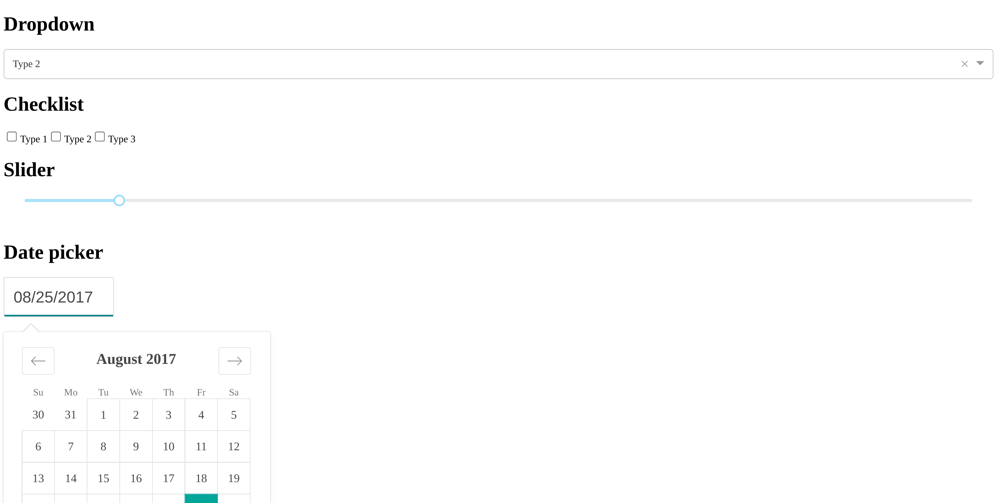
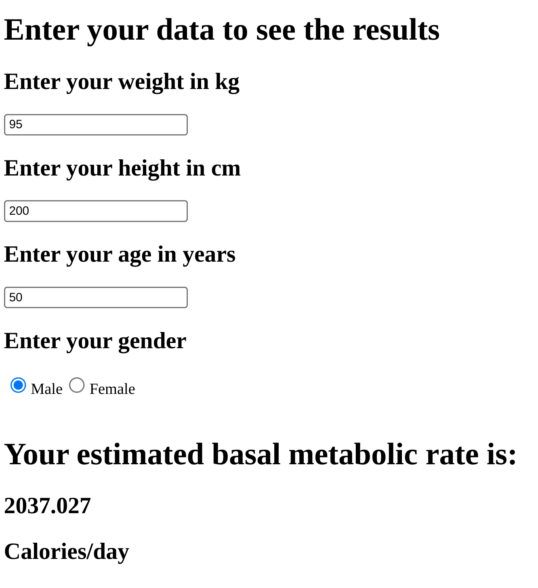

Dash callbacks#
Our previous dash application wasn’t that impressive. We’d like to take user input and modify our page. To do this, we need callbacks. In this example, we create a dropdown menu that selects which graph we’re going to show.
from dash import Dash, dcc, html, Input, Output
import plotly.express as px
import pandas as pd
dat = pd.read_csv('kirby21AllLevels.csv')
dat = dat.loc[dat['type'] == 1].groupby(["roi", "level"])['volume'].mean().reset_index()
app = Dash(__name__)
app.layout = html.Div([
dcc.Dropdown(options = [
{'label' : '1', 'value' : 1},
{'label' : '2', 'value' : 2},
{'label' : '3', 'value' : 3},
{'label' : '4', 'value' : 4},
{'label' : '5', 'value' : 5}
],
value = 1, id = 'input-level'
),
dcc.Graph(id = 'output-graph')
])
@app.callback(
Output('output-graph', 'figure'),
Input('input-level', 'value'))
def update_figure(selected_level):
subdat = dat.loc[dat['level'] == int(selected_level)].sort_values(by = ['volume'])
fig = px.bar(subdat, x='roi', y='volume')
return fig
if __name__ == '__main__':
app.run_server(debug=True, host = '127.0.0.1')
The result looks like the followingm, where you can see the dropdown selection.

Diferent kinds of inputs#
Dash has several kinds of inputs. A full list can be found here. We’ll go over a couple of types here. Try running the following code to see different kinds of inputs (also in assets/dash/dashApp3.py).
from datetime import date
from dash import Dash, html, dcc
from dash.dependencies import Input, Output
app = Dash(__name__)
app.layout = html.Div([
html.H1("Dropdown"),
dcc.Dropdown(
options=[
{'label': 'Type 1', 'value': 1},
{'label': 'Type 2', 'value': 2},
{'label': 'Type 3', 'value': 3},
],
value = 2
),
html.H1("Checklist"),
dcc.Checklist(
options=[
{'label': 'Type 1', 'value': 1},
{'label': 'Type 2', 'value': 2},
{'label': 'Type 3', 'value': 3},
]
),
html.H1("Slider"),
dcc.Slider(min = 0, max = 20, step = 5, value = 10, id='slider'),
html.H1("Date picker"),
dcc.DatePickerSingle(
id='my-date-picker-single',
min_date_allowed = date(1995, 8, 5),
max_date_allowed = date(2017, 9, 19),
initial_visible_month=date(2017, 8, 5),
date=date(2017, 8, 25)
)
])
if __name__ == '__main__':
app.run_server(host = '127.0.0.1')
This looks something like this

Multiple callbacks#
In this example, we show how to utilize multiple inputs in one app. We calculate the basal metabolic rate (BMR) from the formulas from this website. The app below needs statistical development in a few ways. For example, the formula utilizes gender, but some reading suggest sex might be more appropriate. However, the literature seems somewhat sparse on the relationship between of sex and interactions with hormone therapies in BMRs. Regardless, uncertainty is not quantified in the estimates. So, primarily, this app is useful for demonstrating dash development. In the later chapters, we’ll discuss building in specifics and evaluation into prediction apps.
from dash import Dash, dcc, html, Input, Output
app = Dash(__name__)
app.layout = html.Div([
html.H1("Enter your data to see the results"),
html.Div([
html.H2('Enter your weight in kg'),
dcc.Input(id = 'weight', value = 95, type = 'number'),
html.H2('Enter your height in cm'),
dcc.Input(id = 'height', value = 200, type = 'number'),
html.H2('Enter your age in years'),
dcc.Input(id = 'age', value = 50, type = 'number'),
html.H2('Enter your gender'),
dcc.RadioItems(options = [{'label': 'Male', 'value': 'm'},{'label': 'Female', 'value': 'f'}],
value = 'm',
id = 'gender')
]),
html.Br(),
html.H1("Your estimated basal metabolic rate is: "),
html.H1(id = 'bmr'),
])
@app.callback(
Output(component_id = 'bmr' , component_property = 'children'),
Input(component_id = 'weight', component_property = 'value'),
Input(component_id = 'height', component_property = 'value'),
Input(component_id = 'age' , component_property = 'value'),
Input(component_id = 'gender' , component_property = 'value')
)
def update_output_div(weight, height, age, gender):
if gender == 'm':
rval = 88.362 + (13.397 * weight) + (4.799 * height) - (5.677 * age)
if gender == 'f':
rval = 447.593 + (9.247 * weight) + (3.098 * height) - (4.330 * age)
return rval
if __name__ == '__main__':
app.run_server(debug=True, host = '127.0.0.1')
which then looks something like this
